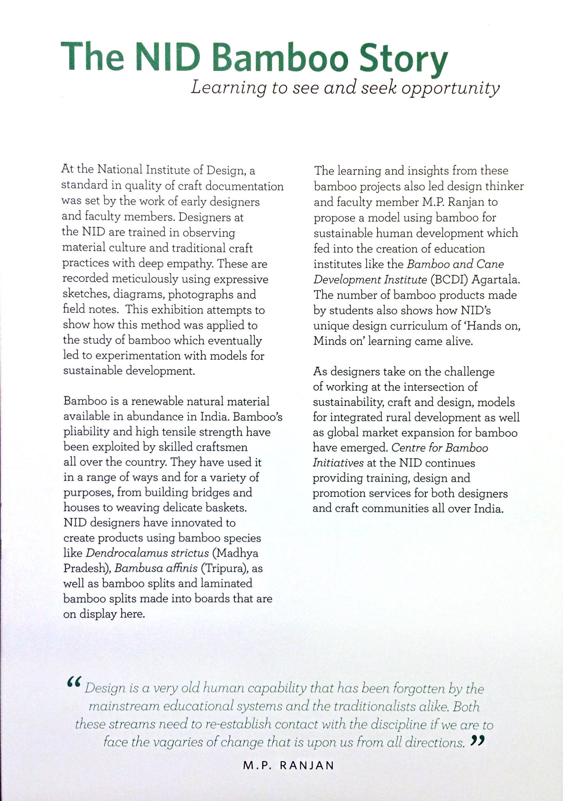
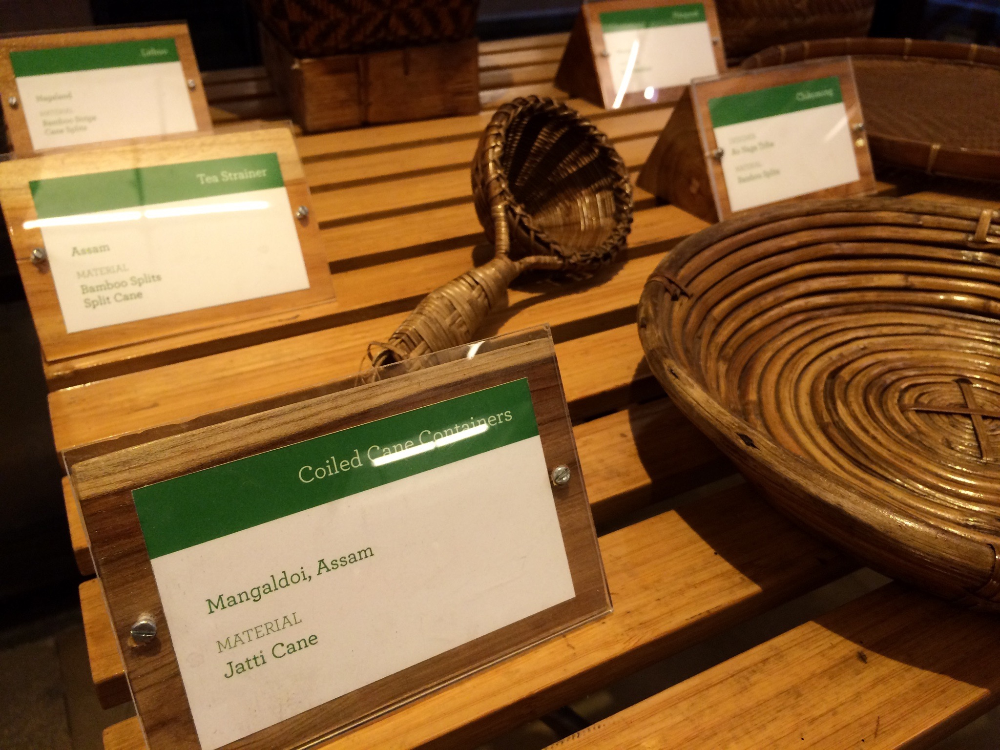
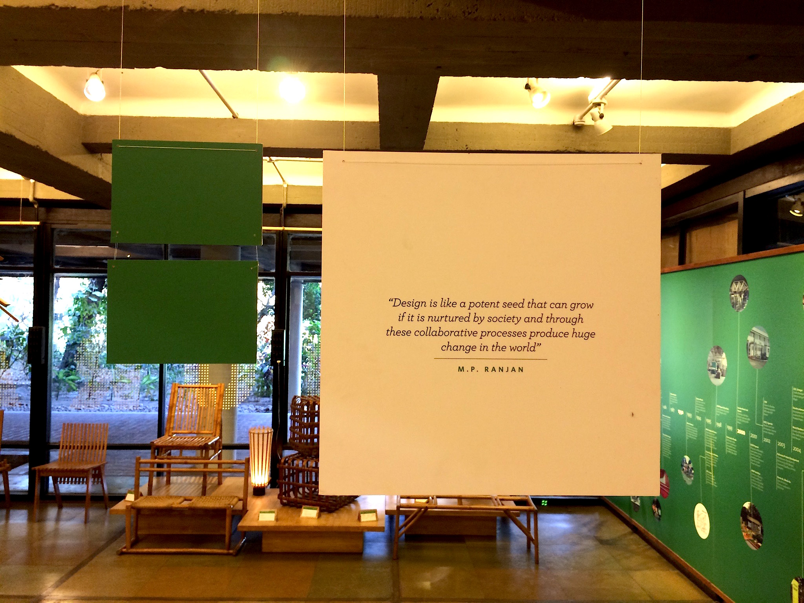

The NID Bamboo Story
Overview
The Design Panorama is a permanent exhibition in the National Institute of Design (NID). One half of the exhibit changes every year, and I was tasked with the job of redoing it for 2016. The brief; The NID Bamboo Story. After extensive research on the history of NID and conducting various interviews, I set about forming a narrative. Directing and managing the various aspects of the exhibition was challenging but it was a great learning experience. I designed all the graphic panels of the exhibition as well as dealing with the administrative red tape that comes with loaning the rare bamboo exhibits.
Role
Project Lead
Client
National Institute of Design
My first ever exhibition opened right on time at the 2016 Convocation ceremony.

Exhibition at The Panorama at NID

Exhibition note

Bamboo objects from the archive


The inimitable M.P. Ranjan